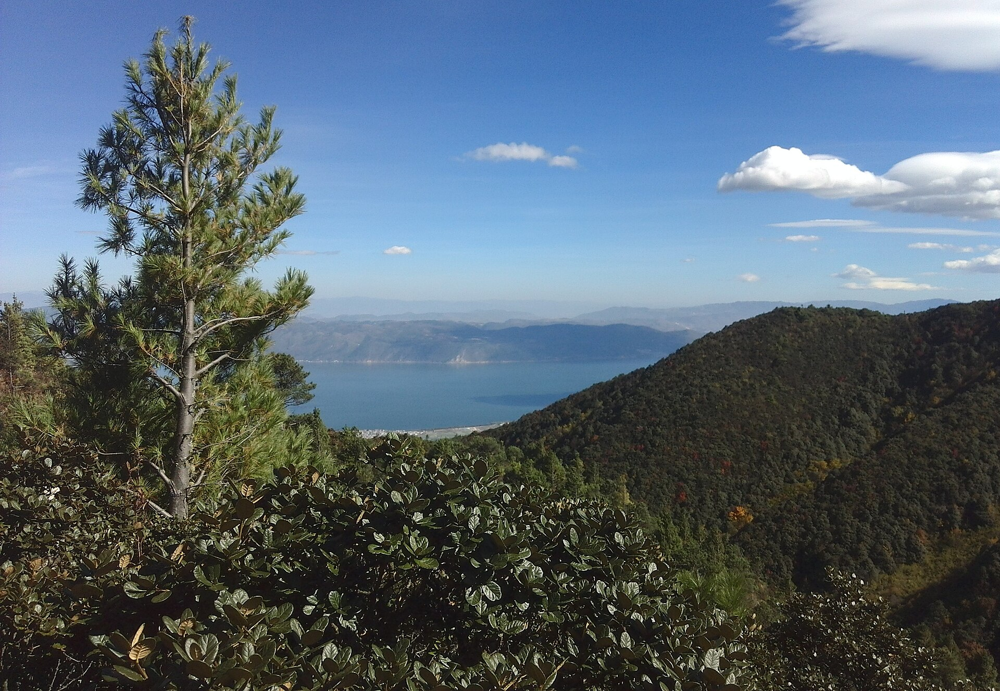
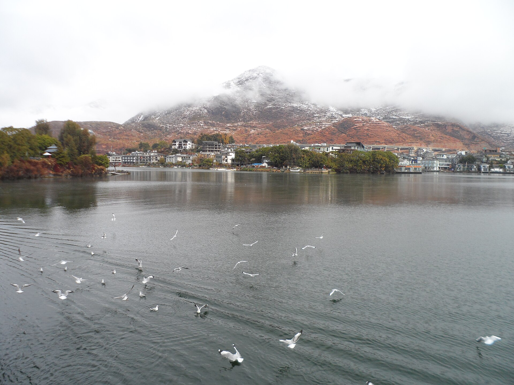
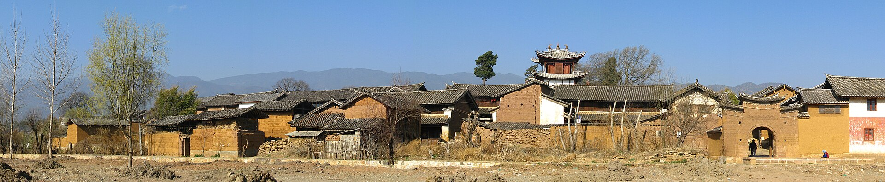
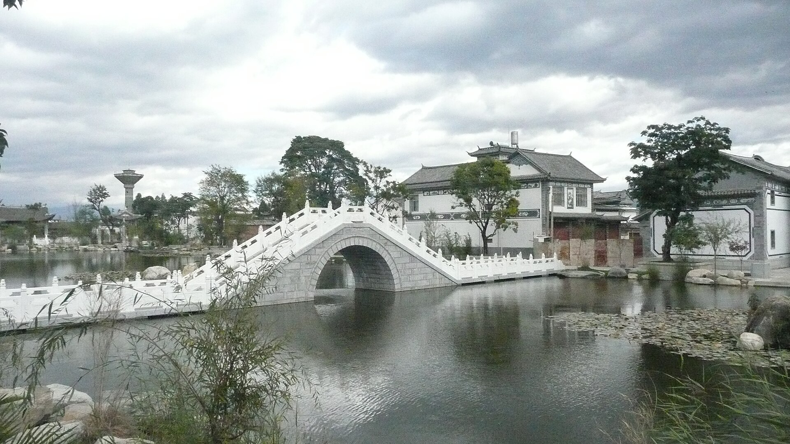
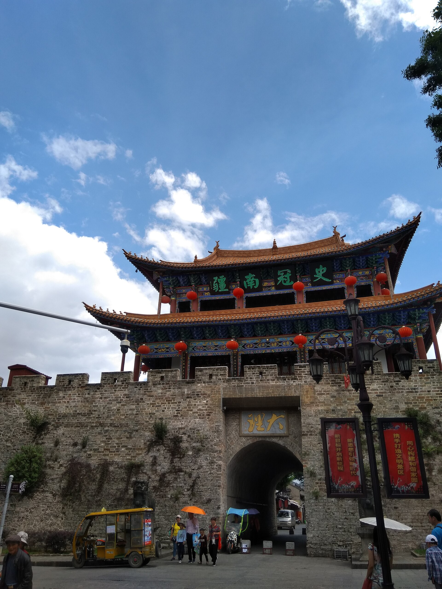
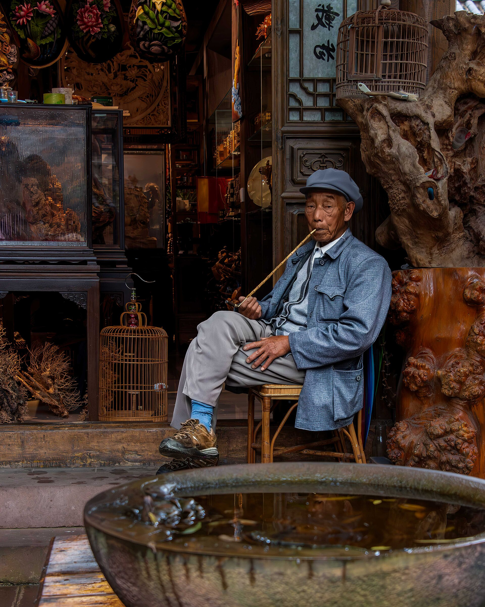
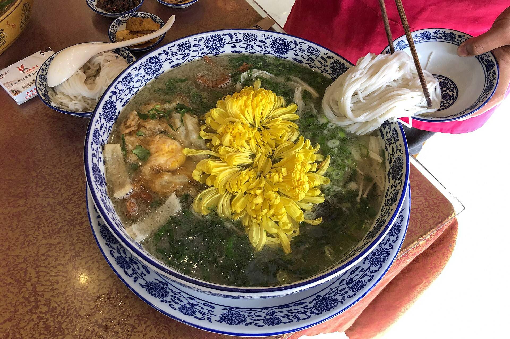

洱海民宿（本次重头）
住洱海西岸一线海景民宿：睁眼就是苍山洱海，露台早餐、下午喝茶、傍晚栈道看日落。大理的民宿水准是全国天花板，预算给足就不会失望。

洱海 + 沙溪 · 6 天 5 晚
妈妈 + 女儿 + 儿子 · 10.1—10.6 · 前三天洱海民宿躺平，后两天沙溪古镇慢游，每天核心项目不超过 2 个
亮点速览

住洱海西岸一线海景民宿：睁眼就是苍山洱海，露台早餐、下午喝茶、傍晚栈道看日落。大理的民宿水准是全国天花板，预算给足就不会失望。

茶马古道上保存最完整的古集市，寺登街、古戏台、玉津桥。商业化程度低、十一也清净，是本行程「躲人」的核心两晚。

喜洲看白族老宅和金黄稻田、吃现烤喜洲粑粑；大理古城留半天慢逛就够，10 月初秋高气爽，随手拍都是明信片。
大交通
行程速览
| 日期 | 上午 | 下午 | 晚上 |
|---|---|---|---|
| D1（10/1） | 飞抵大理，接站到民宿 | 民宿休整、露台喝茶 | 海边栈道日落 + 民宿晚餐 |
| D2（10/2） | 喜洲古镇（老宅+粑粑） | 海舌公园 / 稻田咖啡 | 回民宿，洱海边散步 |
| D3（10/3） | 苍山感通索道 + 寂照庵 | 大理古城慢逛 | 住古城老宅院子 |
| D4（10/4） | 睡到自然醒，包车去沙溪 | 寺登街 + 古戏台 | 玉津桥日落，住沙溪 |
| D5（10/5） | 清晨无人古镇 + 先锋书局 | 石宝山半日 或 民宿躺平 | 古镇小馆晚餐，看星空 |
| D6（10/6） | 沙溪→大理机场/车站 | 返程 | — |
每日详细安排


住宿（本次重点）
D1—D2 住洱海西岸一线海景民宿（才村 / 马久邑 / 下鸡邑一带）；D3 住大理古城老宅院子；D4—D5 住沙溪古镇老宅民宿。三段都是「住进去就不想出门」的类型，本身就是行程的一部分。
美食清单

必吃：酸辣鱼、喜洲粑粑、烤乳扇（甜口，妈妈一般喜欢）、巍山耙肉饵丝、水性杨花汤、野生菌（10 月是尾声，见手青务必问清做法煮熟）、诺邓火腿炒饭；沙溪的土八碗、羊乳饼。
找店：民宿老板推荐最靠谱（他们天天吃）；古城和双廊主街是游客价，往巷子里走；三人点菜好搭配，一鱼一菌一菜一汤刚好。生皮是白族特色但要吃生肉，接受不了别勉强。
国庆特别提示
大理古城、双廊、喜洲稻田是十一人流前三：古城只留 D3 半天 + 一晚（清晨和深夜的古城才是它本来的样子），双廊整段跳过，喜洲赶早 9 点前到。苍山索道 9 点前到基本不排队。沙溪全程人少，放心慢。
弹性备选